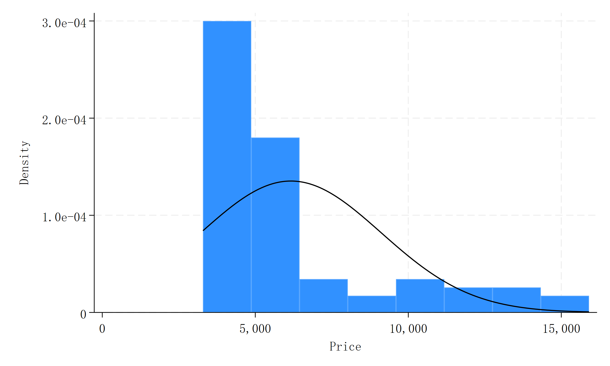
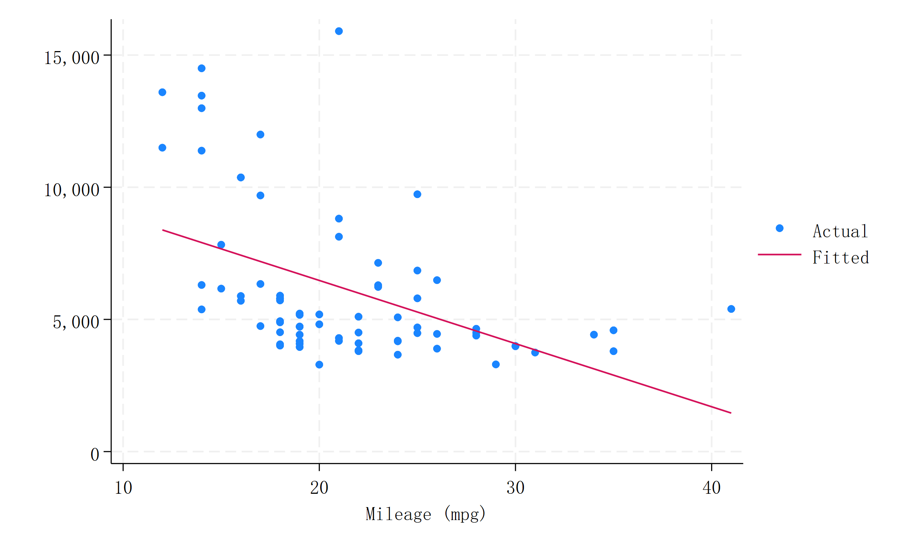

name: <unnamed>
log: D:\examples\example1.log
log type: text opened on: 28 Apr 2026, 11:17:13
. sysuse auto, clear
(1978 automobile data)
. disp "Loaded auto.dta. Observations: `c(N)', Variables: `c(k)'"
Loaded auto.dta. Observations: 74, Variables: 12
. // Generate analysis variables
. gen lprice = ln(price)
. gen weightkg = weight*0.453592
. label var lprice "Log of price"
. label var weightkg "Weight (kg)"
. disp "Variables created: lprice, weightkg"
Variables created: lprice, weightkg
. histogram price, normal title("Price distribution")
(bin=8, start=3291, width=1576.875)
. graph export "price_hist.png", replace
(file price_hist.png not found)
file price_hist.png saved as PNG format
. ishere fig using "price_hist.png"

. twoway (scatter price mpg) (lfit price mpg), ///
> title("Price vs MPG with linear fit") legend(order(1 "Actual" 2 "Fitted"))
. graph export "price_mpg.png", replace
(file price_mpg.png not found)
file price_mpg.png saved as PNG format
. ishere fig using "price_mpg.png"

. regress price mpg weight
Source | SS df MS Number of obs = 74
-------------+---------------------------------- F(2, 71) = 14.74
Model | 186321280 2 93160639.9 Prob > F = 0.0000
Residual | 448744116 71 6320339.67 R-squared = 0.2934
-------------+---------------------------------- Adj R-squared = 0.2735
Total | 635065396 73 8699525.97 Root MSE = 2514
------------------------------------------------------------------------------
price | Coefficient Std. err. t P>|t| [95% conf. interval]
-------------+----------------------------------------------------------------
mpg | -49.51222 86.15604 -0.57 0.567 -221.3025 122.278
weight | 1.746559 .6413538 2.72 0.008 .467736 3.025382
_cons | 1946.069 3597.05 0.54 0.590 -5226.245 9118.382
------------------------------------------------------------------------------
. local r2 = e(r2)
. display %5.3f `r2'
0.293
. * emit the value
. ishere display %5.3f `r2'
0.293
. qui regress price mpg weight i.foreign, vce(robust)
. estimates store model1
. qui regress price mpg , vce(robust)
. estimates store model2
. qui regress price i.foreign, vce(robust)
. estimates store model3
. qui regress price mpg weight i.foreign, vce(robust)
. estimates store model4
. qui regress price mpg weight i.foreign, vce(robust)
. estimates store model5
. outreg2e [model*] using "model.html", replace html
model.html
model.md
dir : seeout
. ishere tab using "model.html"
. tohtml “example1.log”, html(“example1.html”) css(githubstyle) replace